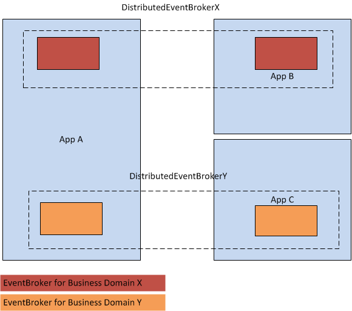

The distributed event broker identification allows to bind several event brokers together. Only events fired in the same context are recognized from the event brokers participating in the context. That allows to have several distributed event brokers in one application.
Example (here with NServiceBus Transport):
Although eventBrokerX and eventBrokerY are running in the same process events published and handled on the distributed event broker of the business domain "X" are not seen on the distributed event broker of the business domain "Y" and vice versa.
Each event broker can be identified by specifying an event broker identification. This information is just transmitted when an event is published without further impact on the distributed event broker. But it lets you distinguish from which location the event was coming from.
The identification can be specified by using the following AddDistributedExtension overload:
When using the extension method without specifying the event broker identification a new System.Guid is generated for each event broker.